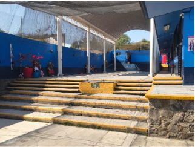

Danzar para reconstruirse
Jaime Rodríguez Rojas
Sección: Escaparate


El primer golpe de zapateado levantó polvo y silencio. Era lunes y el patio de usos múltiples del bachillerato, ese espacio casi siempre gris, se llenó de colores. Las faldas giraban como remolinos y los huaraches resonaban en el piso. No era una clase cualquiera. Era el inicio de algo que, sin saberlo, cambiaría la vida de cien estudiantes de Puebla que cargaban más que mochilas: heridas invisibles, historias que dolían y silencios que pesaban.
Escuchaba cómo los alumnos decían “ya llegó el Profe Jimy”, y me encontraba ahí no como espectador, sino como parte de una experiencia pedagógica que parecía más arte que ciencia. La propuesta era clara: usar la danza folclórica mexicana como herramienta para reconstruir el pensamiento, la identidad y la esperanza. Sin embargo, el protocolo no advertía lo que se sentía al ver a una joven, víctima de abuso, levantar la mirada por primera vez mientras bailaba el Jarabe Tapatío. O a un chico que vivía violencia familiar marcar el ritmo con sus pies, como si por fin tuviera control sobre algo.
Como profesor de Ciencias Naturales en el Bachillerato General Oficial “Jean Piaget”, ubicado al nororiente de la ciudad de Puebla, en una zona de alta marginación y atravesada por un contexto de violencia, observo en cada clase cómo la mayoría de mis estudiantes llega arrastrando problemas que nadie debería enfrentar a los quince años: violencia familiar, abuso, acoso escolar, trastornos alimenticios o abandono parental. Lo llevan en el cuerpo, en la mirada, en la forma de moverse. En este contexto, la escuela deja de ser sólo un espacio de aprendizaje y se convierte en un lugar donde, a través de la danza, la investigación, la escritura y los ensayos, buscamos fortalecer la resiliencia, la expresión emocional y la identidad mediante el aprendizaje autónomo. Propiciamos que lo aprendido en el aula dialogue con la vida cotidiana, con su comunidad, sus raíces y tradiciones, para desarrollar en ellos un pensamiento complejo que les permita enfrentar su realidad diaria. Así, ocurrió algo que no estaba en el plan de estudios. Junto con la directora y dos compañeros profesores, decidimos convertir el salón de clases en un santuario. Durante diez semanas no hubo juicios: sólo el sudor en las palmas, el latido acelerado del cuerpo en movimiento y una necesidad profunda de pertenecer, de alcanzar ese ansiado valor y reconocimiento que la adolescencia necesita con urgencia. La danza dejó de ser técnica para volverse catarsis. Cada paso, cada giro, cada palmada era una forma de decir: “aquí estoy”, “esto soy”, “puedo más de lo que creía”.
La propuesta surgió de una pregunta sencilla pero urgente: ¿cómo enseñar el pensamiento complejo en medio de la dureza cotidiana? Para responderla, retomamos la mirada integral de Edgar Morin, que concibe al ser humano desde todas sus dimensiones —emocional, social, cultural y cognitiva—, así como el enfoque de aprendizaje autónomo de Zimmerman, que enseña a las juventudes a autorregularse y a tomar las riendas de su propio proceso. Desde las aportaciones de Eisner, esto implicó diseñar momentos en los que cada estudiante analizaba, decidía y ajustaba su avance. La danza folclórica mexicana apareció entonces como un puente entre ambos enfoques: una manera de unir el cuerpo, la mente y la identidad cultural.
En las dos primeras semanas, el sentido del aula cambió. Con escepticismo, pena y temor, un grupo de 40 hombres y 60 mujeres, de entre 14 y 16 años, comenzó a investigar las raíces y tradiciones de las danzas regionales. Escribió sobre lo que descubría y ensayó pasos que al principio le resultaban ajenos. Poco a poco, hizo suyos el conocimiento y la ejecución, transformando el contexto problemático en movimiento. A la quinta semana, ya no era sólo baile: era expresión. El ambiente, antes tenso y callado, se volvió cálido y ruidoso; las miradas llenas de miedo y desapego dieron paso a un espacio de apoyo y entendimiento mutuo.
Lo que observé en esas semanas fue resiliencia en estado puro. Jóvenes que aprendieron a regular sus emociones, a trabajar en equipo y a escribir sobre sus miedos y sus sueños. El 97% mejoró su rendimiento académico: lograron una mayor calidad en la presentación de actividades escritas y orales y, en sus exámenes, incrementaron hasta en un 25% las calificaciones, pasando de promedios de 6 a 8 y 9 en asignaturas de ciencias exactas. También cambió de forma significativa su actitud frente a la socialización y al entorno escolar. Al compartir sus historias y reconocer cómo la danza les ayudaba a enfrentar contextos adversos, se convirtieron en apoyo para otras chicas y chicos que no se atrevían a dar ese paso. Sólo el 3% no pudo o no quiso continuar; no expresó sus razones y se respetó su decisión. Más allá de los números, lo que cambió fue la manera en que comenzaron a reconocerse: se sabían personas valiosas, capaces, dignas y necesarias.
Recuerdo a Mariana, quien al principio no quería participar. “No sé bailar”, decía, y se quedaba en la orilla del salón. Poco a poco encontró su ritmo y su espacio. En la última presentación fue ella quien lideró al grupo con una seguridad que conmovía. Cuando terminó, me dijo: “Nunca pensé que mi cuerpo pudiera contar mi historia”. En esa frase comprendí que la danza había hecho más que enseñar pasos: había devuelto la voz.
El caso de Carmenchu fue particularmente significativo. Tras la separación de sus padres y el distanciamiento con su mamá, había dejado de comer. Presentaba un trastorno alimenticio: no desayunaba, apenas comía y, a veces, cenaba. Primero decía que no tenía tiempo; después, que no había qué comer. En una entrevista, su mamá relató que, en un contexto escolar previo, sufrió bullying, acoso y abuso por parte de un familiar cercano. Durante los ensayos, Carmenchu se mareaba y se desmayaba. Sus compañeras hablaron con ella y pusieron como regla que “nadie podía ensayar si no había desayunado”. Consultaron esta decisión con la maestra Adri, abogada de profesión, quien validó la iniciativa por realizarse con respeto a los derechos de todos y con la intención de apoyar a una compañera. La medida fue respetada por todo el grupo, gracias a una intervención docente sensible y oportuna.
La experiencia confirmó lo que la teoría insinuaba: el arte puede ser una forma de pensar con el cuerpo, y la identidad también se construye desde el movimiento. Morin tenía razón al afirmar que el pensamiento complejo entrelaza razón y emoción. Zimmerman también, pues cuando los estudiantes aprenden a autorregularse, no sólo dominan una técnica, sino que se descubren capaces de transformar su propio aprendizaje.
A partir de esta primera experiencia, consideramos necesario formalizar, dentro del marco de la Nueva Escuela Mexicana, una asignatura optativa o taller llamado Identidad, Arte y Resiliencia. No para formar bailarines, sino personas conscientes, críticas, con sentido de pertenencia y autoestima. Mientras tanto, en el Bachillerato “Jean Piaget” seguiremos implementando este programa, en la medida en que las autoridades lo permitan, con estudiantes de primer semestre cada año.
Las mejoras en los hábitos conductuales y académicos han sido evidentes: nuestros estudiantes que participaron lograron reorientar sus necesidades emocionales hacia la construcción de una identidad vinculada a la cultura y las tradiciones. Esto les permitió resignificar experiencias pasadas que les atormentaban y generar expectativas de éxito. Al egresar, sólo una de cada diez personas decidió no continuar sus estudios para incorporarse a la fuerza laboral.
Cuando el salón vuelve al silencio habitual, pienso en esta experiencia. En que el arte puede ser más poderoso que cualquier manual. En cómo la identidad, la expresión corporal y la reflexión crítica pueden ser pilares de una educación verdaderamente humana. Nuestra aula, el patio de usos múltiples, volvió a ser un espacio de tránsito común, custodiado por cuatro bardas silenciosas. Nadie diría que ahí se forjaron esperanzas, cambios y procesos de crecimiento personal.

Y entonces lo entiendo: danzar también es reconstruirse. Porque cuando un espacio cualquiera se convierte en escenario, los estudiantes dejan de ser víctimas y se convierten en protagonistas de su propia historia. Y uno, como docente, aprende que enseñar también puede ser eso: acompañar el movimiento de quienes buscan ocupar un lugar al que tienen derecho. Así, también encontramos sentido a nuestro trabajo y a nuestras iniciativas. Con cada zapateado, se reconstruye nuestra propia identidad.
Bibliografía recomendada
Eisner, E. (2004). El arte y la creación de la mente. Paidós.
Morin, E. (1999). La cabeza bien puesta: Repensar la reforma, reformar el
pensamiento. Seuil.
Morin, E. (2005). Introducción al pensamiento complejo. Gedisa.
Zimmerman, B. J. (2002). Becoming a self-regulated learner: An overview. En Theory
Into Practice, 41(2), 64-70.
Dr. Jaime Rodríguez Rojas
Químico Farmacobiólogo por la BUAP, con maestrías en Ciencias de Laboratorio Clínico y Pedagogía, Doctor en Educación por La Salle, y perito en Criminalística y Química Forense, es investigador en salud (fase 4), ciencias forenses y educación. Mis líneas de trabajo incluyen tratamientos para enfermedades crónico-degenerativas, aprendizaje autónomo y pensamiento complejo, con publicaciones nacionales e internacionales. Docente en educación media superior (SEP), responsable de protección civil y en la Facultad de Medicina (Lic. en Ciencia Forense), también soy bailarín profesional con 15 años de trayectoria y fundador del Grupo Folclórico Aquetzalli, que promueve inclusión y diversidad. discapacitado auditivo desde los 3 años, ejerzo con perseverancia, equidad y compromiso cultural, impulsando la equidad y perspectiva de género.